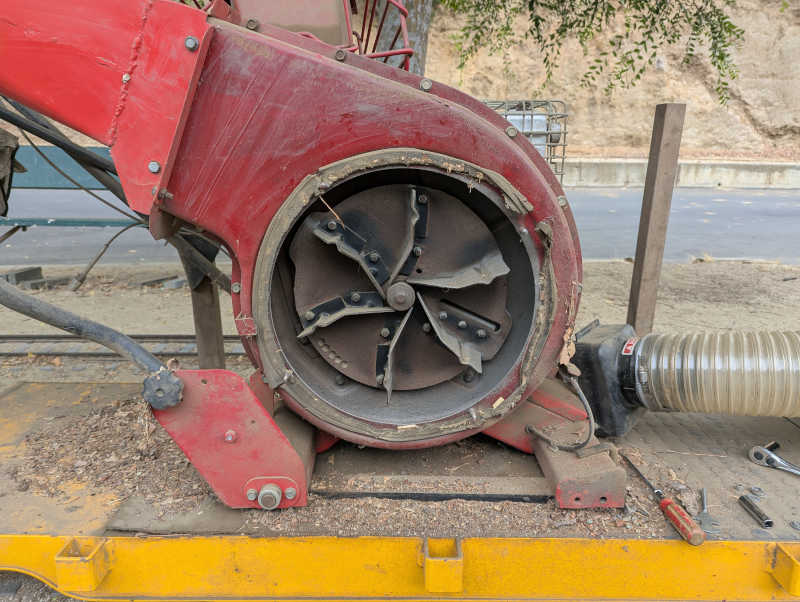
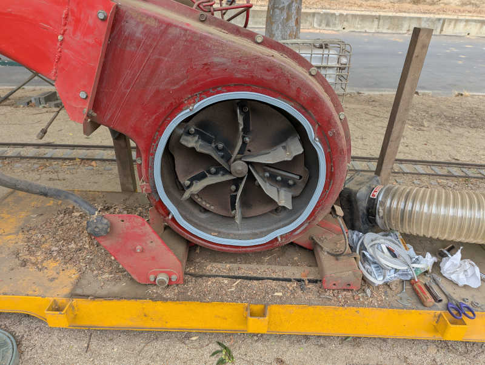
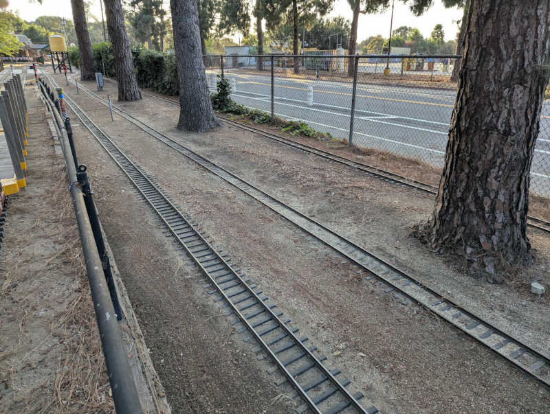
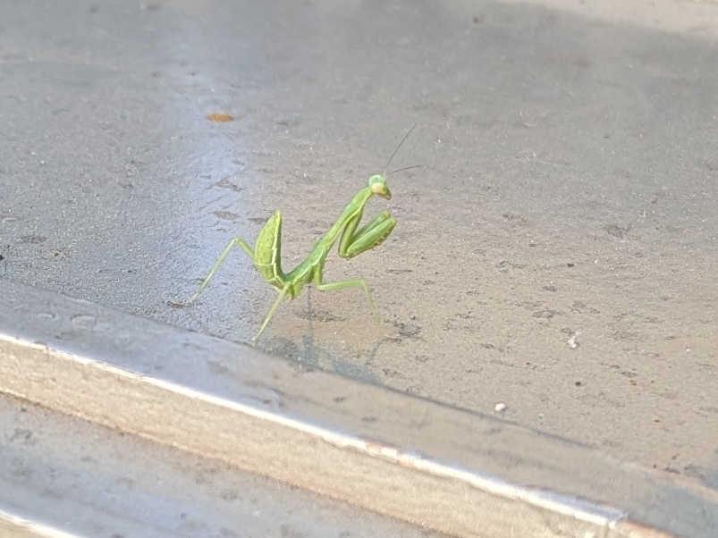

Tuesday 2026/7/7#
- 9.5 hours today, 317.5 hours this track year.
A productive signals repair day
8:15AM - 12:15PM (4 hours)#
Started in panel K where KAA (signal indicating reversing track by covered bridge) sensor needed a minor adjustment. Then the rev. C I/O board I installed as part of the emergency repair on 6/9 was replaced with the intended rev. E board allowing the corresponding emergency repair ESP32 firmware source code changes to be reverted.
With rev. E in place, we can connected an input wire for detection state of IB15. This signal has to travel a long way through two separate lengths of wire, and it was labeled “Does not work”. Traced through and reconnected the wire to an IB15 signal so now it works, but that raised an interesting question: If the wire was not connected to anything, we could not have traced it back to IB15. If so, why was it labeled “IB15”? I can’t remember.
Finally a loose 2.5mm ID barrel jack power cable was replaced with a properly sized 2.1mm ID barrel jack cable.
Returning to panel I, we investigated II yellow not illuminating during this past Sunday public run. Flipping II over to test mode confirmed that yellow was not illuminaating. Looking inside the panel I noticed the yellow wire had fallen out of the LED adapter pigtail board. Putting the wire back in the connector seemed to have done the trick. I like it when fixes are easy. I also put a ferrule on this wire so hopefully it’s less likely to slip out again.
Also noted from Sunday run is EJA yellow failing to illuminate. Opened it up again and jiggled the bulb again. I unscrewed the socket itself from the housing to look for any signsl of damage, I found nothing. The clamping force of the socket is quite strong, so it’s not like the bulb is loose. Not sure why the connection is not reliable. If this second jiggle doesn’t work, I’ll bring in my electronic contact cleaning spray. If that doesn’t work, either, it’ll be time for a little dab of my conductive grease. Will pull those tricks out of my bag as needed.
After putting EJA back together and taking the train through the tunnel, we took another look at CCA. It didn’t do the weird green + red thing… then it did! We figured out it was triggered by a train being present in a particular segment of outer main, from the Nelson exit switch to after the CCA crossover merge. A quick probe indicated the problem is not a red relay stuck on, as was the case for BH and BG, but that the Smith XO power off + “force red” system had broken down somewhere. The next step is to sit in front of panel C with a meter but that’s not healthy at high noon under SoCal summer sun. I’m happy we have a reliable procedure to reproduce the issue, it’ll make diagnostics easier when we come back later.
We went to blissfully shaded panel J to examine feasibility of installing a regulated power supply. The good news is that there’s no NT board in this panel so that’s one headache crossed off the power supply headaches list. In order to leave existing 110V AC lines untouched for the duration of this experiment (for easy reverting if need be) we’ll wire up the test power supply with a power plug. Off to lunch and Home Depot.
1:30PM - 7:00PM (5.5 hours)#
Just as we were setting up to work in panel J, the NT ring blipped off. Driving the train around to panel S NT block didn’t do anything, that’s a problem for later investigation.
Home Depot power plug in hand, a regulated power supply claiming 12V 10A capability was installed in panel J and the old linear power supply disconnected but not removed. Verified the new power supply turns on and off correctly with the NT ring, and that it had no problem supplying power as two switch motors spun simultaneously. Very promising step forward. We’ll leave it to run for a while and, if we’re satisfied it’ll do what we want, we can hard wire it properly and remove the old power supplies.
Investigation of panel S NT board found that it had time on the clock but no volts on N+/-. Solder joints on the big relay looked fine. Probing the smaller blue relay on the timer module, I found panel voltage on C (common) pin but not on NC (normally closed) or NO (normally open) pins. If there’s panel voltage on C, there should be panel voltage on one of those! As I lifted my voltage probe away, I heard relay click. I measured again and this time the NO pin has panel V+. Is the pressure of my voltage probe affecting a loose connection or something? No definitive answer just yet.
Reconnaissance of panel H found the crossing bell relay activation wire, as well as candidate locations to tap into panel ground and panel V+. That’s the information necessary to support Perez experiment with gate warning lights, the next step is up to him.
Monday 2026/7/6#
- 2 hours today, 308 hours this track year.
4:30PM - 6:30PM (2 hours)#
Arrived early afternoon intending to study documentation stored on board the club’s Santa Fe 163 electric locomotive. Got a ride on Davis’ steam train and a bit of socializing before I started studying in earnest, and the study period stopped once people started gathering for the evening’s board meeting. In between I got two solid hours of reading, that’s not bad.
Sunday 2026/7/5#
- 8 hours today, 306 hours this track year.
Smooth and successful first Sunday public run in new direction
8:15AM - 4:15PM (8 hours)#
Sunday public ride operations crew! Miscellaneous tasks including restocking beverage refrigerator in the kitchen and engineering UP1989 for a few runs. First start was an embarassing hard start but things were fine after that.
Saturday 2026/7/4#
- 4 hours today, 298 hours this track year.
Switch motor rev. D oscilloscope diagnostics w/Brock
9:30AM - 1:30PM (4 hours)#
Sat in front of panel J with oscilloscope and other tools so Brock can see the same diagnostics information I gathered earlier. Motor board revision D is not resiliant against voltage sagging and so its onboard digital logic circuits behave erratically (“lose their minds” was the phrase I used) when the motor starts turning and drawing power.
Chessie inspection#
Stopped the time card clock afterwards because I put Chessie on the maintenance bay to look around and that doesn’t count for club work time.
Friday 2026/7/3#
- 5.5 hours today, 294 hours this track year.
Final signals verification before first Sunday run in new direction.
7:45AM - 12:00PM (4.25 hours)#
Completed tasks, some of which I postponed earlier. I found there was a second set of power wires for the 5-way switch that were still connected, explaining the surprising switch moves. Removing those wires depowered the motors and eliminated risk of future surprises.
Since we’ve lost yellow for signal JH, disconnected wire connecting JFA red out to JH yellow in. Now JH will show green when it would previously try to show the yellow it doesn’t have. Not ideal, but better than a dark signal. We can reinstall that wire after JH yellow is restored.
Then we went to the false CCA yellow I diagnosed to a failed closed relay for red of the following signal BH. Replacing BH signal driver board resolved CCA false yellow.
1:15PM - 2:30PM (1.25 hours)#
After a long lunch in an air conditioned space, ventured back out into the heat for final verification laps. Disappointed to find CCA (where the false yellow was triggered by BH red relay stuck on) has its own weirdness illuminating red and green at the same time when set to crossover. Since the sun is blasting and it works fine for non-crossing-over trains, we’ll come back to this later. Helped put away SPSF and other pieces of equipment, then retreated from the heat.
Wednesday 2026/7/1#
- 9.5 hours today, 288.5 hours this track year.
Reverse direction signs and club work equipment, track cleanup.
8:15AM - 1:30PM (5.25 hours)#
Club owned Sunday operations equipment were turned around the previous Sunday but the official turn around day is today.
First thing was to flip three direction arrows informing everyone of the track direction. This required a security Torx bit that I don’t usually carry with me to the club but I was prepared for the task.
Next I hitched up club-owned directional maintenance equipment that might have seen use between Sunday and today.
- Center cab work locomotive (which Clouse did use for garden work)
- Super (track) sucker
- Big yellow flatbeds with F and B direction labels.
Since they were all hitched up and ready to run, I thought it was a convenient time to run it across the entire Sunday public run route as well. But as soon as I started the sucker engine I was reminded that the fan seal had decayed and throwing stuff out of the leak. Those leaks are at 2 and 4 o’clock in this picture before my repair.

I need to fix that first, which meant a Home Depot run for adhesive-backed weatherstripping seal.

After the seal was installed I started using track sucker for real. This is a minor hassle because I couldn’t really empty the sucker bag by myself. I had to resort to using a shovel and a garbage can to empty the bag piecemeal.
I had also loaded up some big garbage cans and brought back piles of leaves from Bagley. There are still piles of leaves out there but I’m tackling it one train load at a time. It was tiring work and I felt completely pooped by the time the bag was emptied but there was another contributing factor: I completely forgot about lunch. An empty stomach certainly would not have helped. It was a good stopping point so I put everything away in case I felt like going straight home after lunch.
3:15PM - 7:30PM (4.25 hours)#
After an extended lunch break and Train Shack visit, returned to do some signals diagnosis. Switch motor failure by Nelson tunnel was easy: just a stuck branch. Failed reversing track indicator (red/blink red) by covered bridge was fixed by cleaning thick tough spider webs and debris out of microswitch housing. Unexpected switch behavior near Phil West barn ladder track was due to remnants of 5-way switch still receiving power for some reason. And the false CCA yellow in front of station was caused by a BH red relay that had failed closed.
Putting off the latter two issues until later, I picked up the two flatbeds again and raked the thick layer of pine needles out of Bowlus siding. There were clumps left from track sucker in the morning pushing things around and the unsightly look got on my nerves.

I had a little friend for part of this project. A tiny preying mantis stowed away on the train. I didn’t see it arrive and I didn’t see it depart but this tiny thing would fit on the tip of my pinky finger. At the moment I would guess it can go after ants before growing big enough to go after larger food.
